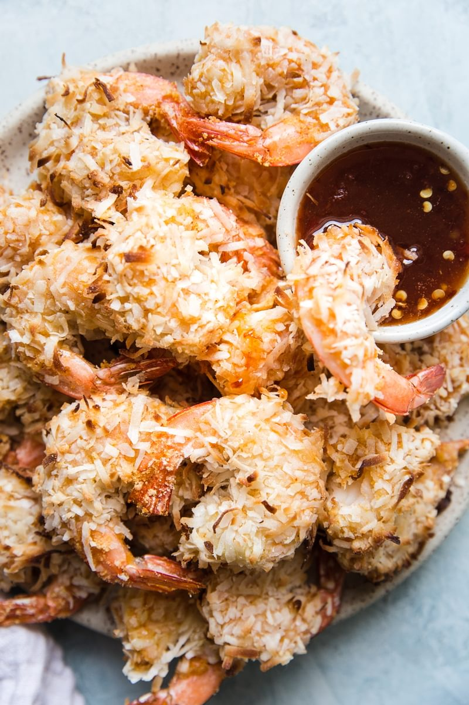

Baked coconut shrimp

The Coconut Shrimp Theory of Home Cooking.
We cook at home for many reasons—to save money, because we’re too tired to go out, to connect
with our families—but this baked coconut shrimp recipe is a perfect example of one of the best
and least-talked about reasons to cook at home: because you can make healthy versions of
“junky” foods and therefore indulge in them without guilt of any kind. Is this our primary
driving force for cooking for our families? No. Is this a very very excellent reason to become
a seasoned home cook? YES!
Ingredient
- 1 1/2 lbs raw shrimp, skins removed, tails left on
- 3 large eggs, beaten
- 1 cup almond flour
- 1 tsp salt
- 1 tsp paprika
- 1 tsp onion powder
- 1 tsp garlic powder
- 1/4 tsp freshly ground pepper
- 2 cups shredded sweetened coconut (or unsweetened if doing Whole30)
Steps
- Preheat oven to 425F.
-
Combine almond flour with salt, paprika, onion powder, garlic powder and pepper. Use a fork
to break up any large clumps.
-
Working with one shrimp at a time dip shrimp into the flour mixture until coated followed by
the beaten eggs and then back into the flour mixture. Lastly dip the shrimp into the
sweetened coconut, using your hands to make sure it sticks.
-
On a parchment lined baking sheet, arrange prepared shrimp and bake on a center rack for 12
minutes.
- Serve immediately along with honey chili sauce. Enjoy!